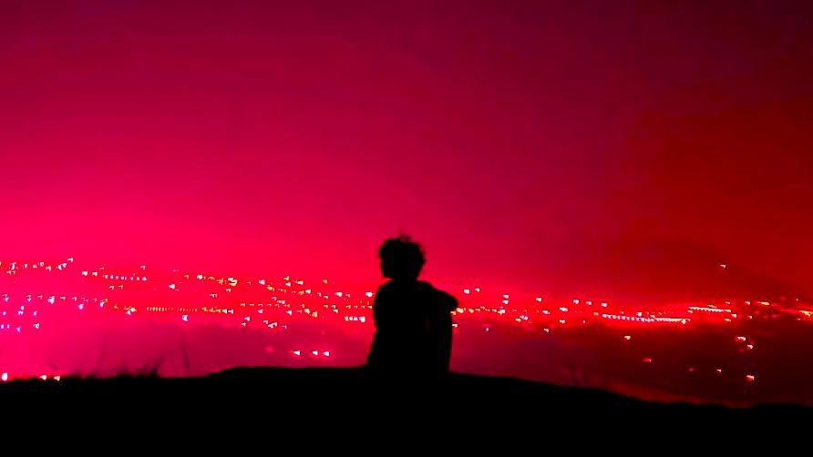
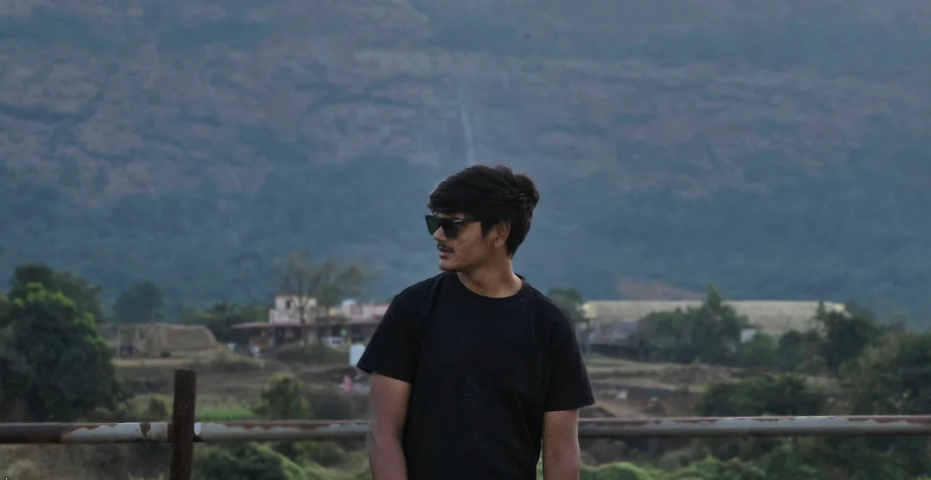
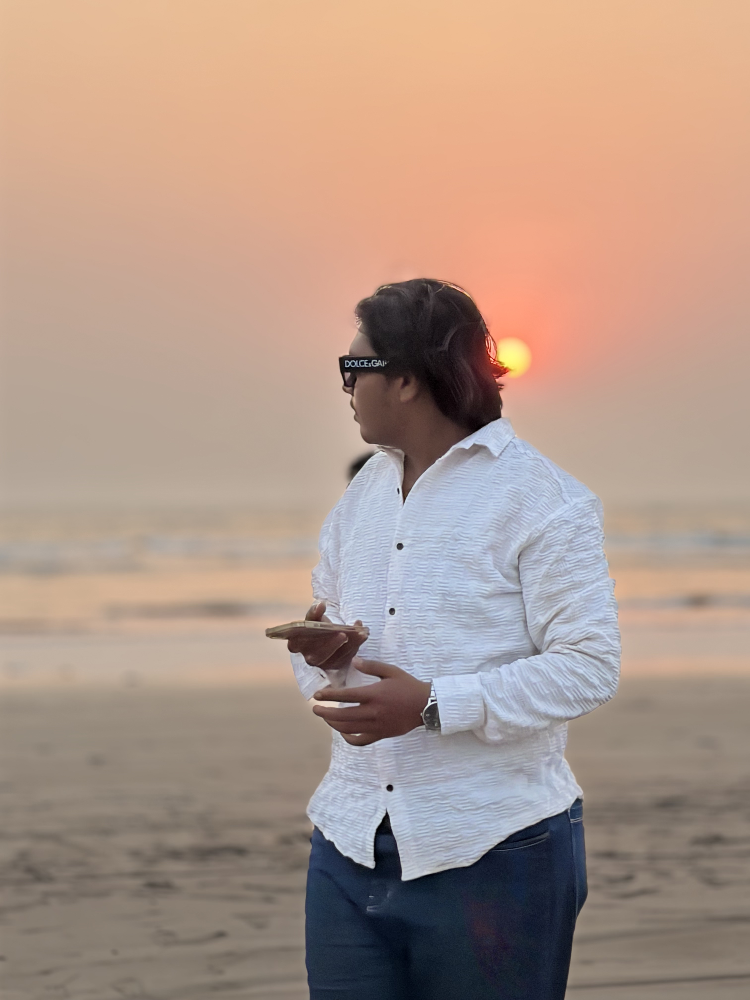

CineTorqueFilms is a cinematic storytelling studio focused on motion, machines, and the art of visual narrative.
Instagram
I am the founder of CineTorqueFilms and serve as the Workflow Manager, responsible for organizing and coordinating the production pipeline from concept to final delivery.
My role focuses on managing the workflow between cinematography, editing, and production to ensure that every project moves smoothly through each stage of development.
By maintaining an efficient and structured process, I help the team focus on creativity while ensuring that projects are delivered with high technical and creative standards.
Instagram
Head Cinematographer & Project Manager
I am the Head Cinematographer and Project Manager at CineTorque, responsible for guiding the visual direction and production workflow across our projects.
My role focuses on capturing strong cinematic visuals while ensuring each project moves efficiently from concept to final delivery.
At CineTorque, I aim to transform ideas into visually compelling stories while maintaining an organized and collaborative production process.
Instagram
Main Editor
I am the main editor at CineTorqueFilms, responsible for shaping the final look, pacing, and narrative of our productions.
My work focuses on crafting cinematic edits, dynamic transitions, and immersive visual storytelling that brings each project to life.
At CineTorque, I aim to transform raw footage into polished cinematic experiences that reflect the vision of the project.
We believe motion is more than movement — it is emotion. CineTorqueFilms captures the power, energy, and personality of machines, riders, and stories through cinematic visuals.
We create cinematic edits, motorcycle content, visual storytelling, and high-impact short films designed for digital platforms.
Our work combines dynamic camera movement, cinematic color grading, and immersive editing to create visuals that feel powerful, dramatic, and alive.